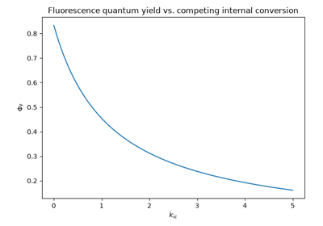

Breakthroughs in Photochemistry#
“Rays which are not absorbed produce no chemical action.” – attributed to J. W. Draper’s 1842-1843 statement of what is now called the Grotthuss-Draper law
Photochemistry asks what happens after a molecule absorbs a photon: not
whether a reaction is thermodynamically favorable, but which one of
several competing physical and chemical fates – fluorescence,
phosphorescence, heat, or genuine chemical change – claims the resulting
excited state, and how fast. The systems in chemistrykit.photochem
retrace the century and a half it took to turn that question into a
quantitative science: from the first statement that only absorbed light
does anything at all, through the photon-counting law of photochemical
equivalence and its most striking exception, to the Jablonski diagram
that organizes every excited-state fate into one picture, and the
photostationary state a molecule reaches when two of those fates run in
opposite directions at once. This chronology traces the major
breakthroughs behind the package, with a pointer to the corresponding
implementation at each stop.
1817, 1842 – Grotthuss and Draper: Only Absorbed Light Acts#
Christian Johann Dietrich (Theodor) von Grotthuss, better known for the proton-hopping “Grotthuss mechanism” of ionic conduction in water, proposed in 1817 what is now considered the first law of photochemistry: that a photochemical effect can only be produced by light the reacting substance actually absorbs, with any transmitted or reflected light doing nothing at all, however intense. The idea seems self-evident in retrospect but was a genuine, nontrivial claim at the time, and it went essentially unnoticed outside a small circle for a generation. John William Draper, working independently in the United States and apparently unaware of Grotthuss’s earlier statement, arrived at the identical principle in the early 1840s from his own studies of light’s chemical (as opposed to heating or illuminating) action, stating flatly that rays which are not absorbed produce no chemical action whatsoever. The combined result – now universally known as the Grotthuss-Draper law – is the starting axiom of all quantitative photochemistry: before asking how efficiently absorbed light drives a reaction, one first has to know how much light was absorbed in the first place, a quantity every later entry in this chronology depends on.
Implementation: photons_absorbed()
computes exactly this quantity – the absorbed photon flux
\(I_{abs}=I_0(1-10^{-A})\), via
transmittance() – and is
the quantity every quantum-yield calculation in this module divides by,
never the incident flux itself, precisely because the Grotthuss-Draper
law says only the absorbed portion can do anything.
References: T. Grotthuss, “Physisch-chemische Forschungen” (1817), as commonly credited with the first statement of the law in secondary photochemistry literature; a precise, independently verified primary citation for the 1817 statement has not been located. J. W. Draper, “On Some Analogies Between the Phenomena of the Chemical Rays and Those of Radiant Heat,” Philos. Mag. Ser. 3, 19, 195-210 (1841), and subsequent papers through 1843, commonly cited as the independent restatement that gives the law its modern name.

Fluorescence/phosphorescence quantum yields, and photon absorption via Beer-Lambert
1908, 1912 – 1913 – Stark, Einstein, and the Photochemical Equivalence Law#
Johannes Stark, in 1908, and Albert Einstein, working independently and from a different (thermodynamic) starting point in 1912-1913, each arrived at a sharper, quantitative version of the Grotthuss-Draper principle: not merely that only absorbed light acts, but that each individual quantum of absorbed light activates, at most, exactly one molecule. A priority dispute followed almost immediately – Einstein’s 1912 paper responds directly to a competing claim of priority from Stark – and the law is accordingly known today by both names, the Stark-Einstein law of photochemical equivalence. The principle gave photochemistry its first genuinely quantitative yardstick: dividing the amount of chemical product formed by the number of photons absorbed defines the quantum yield of a photoreaction, a number that should equal exactly 1 for the simplest possible case (one photon, one converted molecule, no competing pathway) – a natural reference point against which every real photoreaction’s efficiency, from a completely dark (non-absorbing, hence non-reacting) side reaction to the wildly super-unity yields of a radical chain reaction (see 1913-1918, below), could now be measured and compared.
Implementation: photochemical_quantum_yield()
implements exactly this ratio, \(\Phi=\) moles product formed /
moles photons absorbed; its doctest reproduces the simplest case the
Stark-Einstein law describes – one photon absorbed, one product molecule
formed, \(\Phi=1\) exactly – while its docstring explicitly flags
that a chain reaction can exceed this bound, the historically real
exception explored next.
References: J. Stark, Phys. Z. 9, 889-894 (1908) (page range as commonly cited in secondary literature; not independently verified); A. Einstein, “Quantentheorie der Lichterzeugung und Lichtabsorption,” Ann. Phys. 37, 832-838 (1912); A. Einstein, “Zur Theorie der Lichterzeugung und Lichtabsorption,” lecture to the Societe francaise de physique, 27 March 1913 (published version), responding directly to Stark’s priority claim.
Fluorescence/phosphorescence quantum yields, and photon absorption via Beer-Lambert
1913, 1918 – Bodenstein, Nernst, and the Photochemical Chain Reaction#
Max Bodenstein, measuring the quantum yield of the photochemical reaction between hydrogen and chlorine gas, found a result that flatly contradicted the brand-new Stark-Einstein law: rather than the expected yield of roughly 1, each absorbed photon was somehow responsible for the formation of on the order of \(10^5\)-\(10^6\) molecules of hydrogen chloride. Walther Nernst – already encountered above for his electrochemical equation, and here contributing to photochemistry instead – proposed the resolution in 1918: a single absorbed photon splits one Cl2 molecule into two highly reactive chlorine atoms, and each atom then propagates a long chain of alternating reactions with H2 and Cl2, regenerating a fresh reactive chlorine atom at the end of every cycle and consuming thousands of H2/Cl2 pairs before the chain is finally broken by some termination step. The photochemical equivalence law was not wrong – each absorbed photon still activates only one molecule directly – but that single activation can, in a chain reaction, unleash an arbitrarily long cascade of further, purely thermal chemistry, giving an overall quantum yield with no upper bound at all.
Connection: this package models the direct, non-chain excited-state
photophysics that the Stark-Einstein law describes exactly –
photochemical_quantum_yield()’s
docstring explicitly flags that a radical-chain photoreaction is the real
exception to its otherwise generally applicable \(0\le\Phi\le1\)
range, without separately modeling a chain-propagation mechanism (which
belongs to general reaction kinetics rather than to the photophysics this
subpackage otherwise covers); jablonski_network(),
by contrast, is a purely unimolecular decay network with no amplification
step of any kind, illustrating by construction the opposite (bounded,
\(\Phi\le1\)) regime this entry’s chain-reaction exception departs
from.
References: M. Bodenstein, “Eine Theorie der photochemischen Reaktionsgeschwindigkeiten,” Z. Phys. Chem. 85, 329-397 (1913); W. Nernst, “Zur Theorie der Reaktionsgeschwindigkeit in Gasen,” Z. Elektrochem. 24, 335-341 (1918) (chain-mechanism proposal for the H2/Cl2 system; page ranges for both papers are as commonly cited in secondary photochemistry literature and have not been independently verified against the original volumes).
Fluorescence/phosphorescence quantum yields, and photon absorption via Beer-Lambert
1919 – Stern and Volmer’s Quenching Equation#
Otto Stern and Max Volmer – the same Volmer who, a decade later, would help complete the Butler-Volmer equation in electrochemistry – studied how the presence of a second, “quencher” species suppresses a fluorescent molecule’s emission, by opening an additional nonradiative decay pathway (collisional energy transfer, electron transfer, or simply competing for the excitation) that competes with fluorescence for the excited-state population. They found the resulting suppression to be strikingly simple: the ratio of unquenched to quenched fluorescence intensity grows linearly with quencher concentration, with a slope (the Stern-Volmer constant) equal to the product of the quenching reaction’s bimolecular rate constant and the fluorophore’s own unquenched excited- state lifetime – a longer-lived excited state simply has more time to encounter a quencher molecule before it decays on its own. The same linear relationship, applied instead to the ratio of unquenched to quenched excited-state lifetimes, gives experimentalists a direct way to distinguish this genuinely dynamic (collisional) quenching mechanism from static quenching (pre-formed, non-fluorescent ground-state complexes), which suppresses intensity by the identical linear law while leaving the lifetime of whichever fluorophores remain uncomplexed completely unchanged.
Implementation: stern_volmer_ratio()
implements exactly this equation, and
dynamic_quenching_constant()
the \(K_{sv}=k_q\tau_0\) relationship for the dynamic case.
fit_stern_volmer()
recovers \(K_{sv}\) from synthetic intensity-ratio data by a
through-the-origin linear regression on the shift \(I_0/I-1\)
(the physically required zero-quencher intercept fixed at exactly 1
rather than left as a free-fit parameter), and
classify_quenching_mechanism()
implements the dynamic-vs-static diagnostic described above, comparing
the independently measured intensity-ratio and lifetime-ratio slopes.
References: O. Stern and M. Volmer, “Über die Abklingzeit der Fluoreszenz,” Phys. Z. 20, 183-188 (1919).

Stern-Volmer quenching, and distinguishing static from dynamic mechanisms
1920s – Vavilov’s Law of Constant Fluorescence Quantum Yield#
Sergei Vavilov, systematically measuring how a dye solution’s fluorescence quantum yield depends on the wavelength of the light used to excite it, found – after an initial 1922 study and further refinement through the mid-1920s – a result that is not at all obvious a priori: for a given fluorophore in a given environment, the fluorescence quantum yield is essentially independent of excitation wavelength, even though higher-energy (shorter-wavelength) photons deliver more excess energy to the molecule than lower-energy ones. The explanation, only fully systematized by Kasha’s rule three decades later (see 1950, below), is that whatever excited state absorption happens to populate directly, the molecule relaxes to the lowest excited state of that spin multiplicity before doing anything else (fluorescing, crossing to the triplet manifold, or decaying nonradiatively) – so the competition between those decay channels, and hence the resulting quantum yield, depends only on the rate constants out of that one lowest excited state, never on which higher state or vibrational level the exciting photon originally reached.
Implementation: fluorescence_quantum_yield()
is, by construction, a function purely of the three \(S_1\) decay
rate constants (\(\Phi_f=k_f/(k_f+k_{ic}+k_{isc})\)) and takes no
excitation-wavelength or excitation-energy parameter at all – exactly
Vavilov’s empirical law, encoded directly into the function’s signature
rather than merely satisfied numerically by some fortunate cancellation.
References: S. I. Vavilov, “Die Fluoreszenzausbeute von Farbstofflösungen als Funktion der Wellenlänge des anregenden Lichtes,” Z. Phys. 42, 311-318 (1927), consolidating his earlier 1922 measurements (exact citation for the 1922 work not independently verified here).
Fluorescence/phosphorescence quantum yields, and photon absorption via Beer-Lambert
1933 – Jablonski’s Diagram#
Aleksander Jablonski, a Polish physicist working on the polarization of fluorescence, introduced the energy-level diagram that now bears his name: a single organized picture of every radiative and nonradiative pathway available to a molecule after it absorbs a photon and lands in an excited electronic state – prompt fluorescence back to the ground state, radiationless internal conversion, intersystem crossing into the lower-energy but spin-forbidden (and hence much longer-lived) triplet manifold, and, from there, either slow phosphorescence or further nonradiative decay. What had been, before Jablonski, a scattered collection of separately named phenomena became, with his diagram, a single coherent kinetic scheme: every excited-state fate is just one more first-order (or, for intersystem crossing, still effectively unimolecular) rate process competing with all the others for the same finite excited- state population, exactly the same mass-action mathematics as an ordinary chemical reaction network.
Implementation: jablonski_network()
builds precisely this three-state (\(S_1\), \(T_1\), \(S_0\))
diagram directly as a
chemistrykit.kinetics.systems.networks.StoichiometricNetwork –
reusing the kinetics domain’s general mass-action reaction-network engine
rather than reimplementing rate-equation integration, since a Jablonski
diagram is, mathematically, nothing more than a branching-then-
consecutive first-order reaction network. jablonski_populations_analytic()
gives the closed-form Bateman-equation solution for all three
populations, checked in this module’s own test suite to agree with the
network’s numerical integration to better than \(10^{-10}\).
References: A. Jablonski, “Efficiency of Anti-Stokes Fluorescence in Dyes,” Nature 131, 839-840 (1933).

1944 – Lewis and Kasha: Phosphorescence as Triplet-State Emission#
For decades after phosphorescence was first distinguished experimentally from ordinary (prompt) fluorescence by its far longer afterglow, its physical origin remained genuinely mysterious – an anomalously long-lived, spin-forbidden emission with no settled explanation. Gilbert N. Lewis and Michael Kasha resolved the question in 1944, using magnetic susceptibility measurements to show directly that a molecule in its phosphorescent state is paramagnetic – meaning it carries a net electron spin, and is therefore in a triplet (rather than the ordinary, spin-paired singlet) electronic state. Phosphorescence’s characteristic slowness followed immediately: emission from a triplet state back to the singlet ground state is spin-forbidden by the same selection rule that makes intersystem crossing itself a comparatively slow process, so a molecule that reaches the triplet manifold can linger there, on timescales of milliseconds to seconds rather than the nanoseconds typical of allowed fluorescent transitions, before it finally, reluctantly, emits.
Implementation: the \(T_1\) state in
jablonski_network() is
exactly the triplet state Lewis and Kasha identified, decaying at the
comparatively slow combined rate \(k_p+k_{ic,T}\); phosphorescence_quantum_yield()
computes the probability that an excited molecule both reaches this
triplet state (via intersystem_crossing_yield())
and then decays radiatively from it – the product of exactly the two
successive branching probabilities Lewis and Kasha’s triplet-state
picture implies.
References: G. N. Lewis and M. Kasha, “Phosphorescence and the Triplet State,” J. Am. Chem. Soc. 66, 2100-2116 (1944).
Fluorescence/phosphorescence quantum yields, and photon absorption via Beer-Lambert
1949 – Norrish and Porter’s Flash Photolysis#
Every entry so far describes what happens to an excited molecule in principle; observing it directly, in real time, was a separate and much harder experimental problem, since the reactive intermediates a photoreaction produces – excited states, radicals, ions – typically survive for only microseconds or less. Ronald Norrish and George Porter solved it by turning the problem’s own difficulty into the tool: firing an intense flash lamp discharge to photolyze a sample far faster than its intermediates could decay, then probing the resulting transient absorption spectrum with a second, precisely delayed flash, they could watch a short-lived species appear and disappear on its own natural timescale for the first time, rather than inferring its existence indirectly from a reaction’s final products. Flash photolysis and its many later refinements (down to femtosecond pulses, decades afterward) turned photochemistry from a science of stable starting materials and stable products into one that can watch the unstable, fleeting intermediates in between – work recognized with a share, together with Manfred Eigen, of the 1967 Nobel Prize in Chemistry.
Connection: this package has no time-resolved spectroscopic simulation
of its own to point to – flash photolysis is fundamentally an
experimental technique for observing transient species, not itself an
algorithm – but the time-resolved \(S_1(t)\) and \(T_1(t)\)
population traces
jablonski_network()
computes are exactly the kind of transient, sub-second intermediate-
species kinetics flash photolysis made directly observable for the first
time, rather than only inferable from a reaction’s eventual products.
References: R. G. W. Norrish and G. Porter, “Chemical Reactions Produced by Very High Light Intensities,” Nature 164, 658 (1949).
1950 – Kasha’s Rule#
Michael Kasha, four years after his triplet-state work with Lewis, proposed a second, more general organizing principle for excited-state photophysics: for a molecule excited to any electronic state, of any multiplicity, above the lowest excited state of that same multiplicity, internal conversion and vibrational relaxation to that lowest state happen so much faster than any radiative or further electronic-relaxation process that essentially all subsequent emission – fluorescence from the lowest excited singlet, phosphorescence from the lowest triplet – originates there and only there, regardless of which higher state absorption first populated. Kasha’s rule is what makes it physically sensible to model a molecule’s excited-state kinetics with just one representative singlet and one representative triplet level, as this package’s Jablonski-diagram model does, rather than needing to track every individual excited state a real absorption spectrum might reach: whichever \(S_n\) (\(n\ge2\)) a photon actually populates, Kasha’s rule guarantees it collapses to \(S_1\) before anything else of photochemical consequence happens.
Connection: jablonski_network()’s
minimal three-state structure – exactly one representative singlet
excited state (\(S_1\)) and one representative triplet
(\(T_1\)), rather than a separate state for every electronic level a
real molecule’s absorption spectrum might access – is the direct
modeling consequence of Kasha’s rule: higher excited states are assumed
(correctly, for the overwhelming majority of molecules) to funnel down to
\(S_1\)/\(T_1\) before competing further, so the minimal model
loses no essential photophysics by omitting them.
References: M. Kasha, “Characterization of Electronic Transitions in Complex Molecules,” Discuss. Faraday Soc. 9, 14-19 (1950).
1967 – Fischer and the Photostationary State#
A molecular photoswitch – two forms, A and B, each capable of absorbing the same irradiation wavelength and photoisomerizing to the other – behaves nothing like an ordinary photoreaction that simply runs to completion: under continuous illumination, both the forward and reverse photoreactions run simultaneously, and the system settles instead into a photostationary state (PSS), a genuinely dynamic (not thermodynamic) balance in which nonzero forward and reverse photon-driven isomerization rates happen to exactly cancel in the population balance. Egmont Fischer worked out the composition of this photostationary state in closed form directly from the two directions’ quantum yields and molar absorptivities, giving photochemists a simple algebraic target – the [B]/[A] ratio a given photoswitch and illumination wavelength will settle into – against which real photoswitching experiments (a widely used class of molecular tools, from azobenzenes to diarylethenes) could be quantitatively checked.
Implementation: photoswitch_rate_constants()
converts quantum yields and molar absorptivities into the pseudo-first-
order rate constants \(k_{AB}\), \(k_{BA}\) in Fischer’s
low-optical-density approximation;
photoswitch_network()
reuses reversible()
directly (a photoswitch under simultaneous forward/reverse photolysis
being, mathematically, the identical reversible first-order network a
thermally reversible reaction would be), and
photostationary_state()
gives Fischer’s exact algebraic PSS ratio
\([B]_{pss}/[A]_{pss}=k_{AB}/k_{BA}\) – checked in this module’s own
example against direct long-time numerical integration of the ODE
network, which converges to the identical ratio.
References: E. Fischer, “The Calculation of Photostationary States in Systems A <-> B When Only A is Known,” J. Phys. Chem. 71, 3704-3706 (1967).

Photostationary-state kinetics of a two-state photoswitch